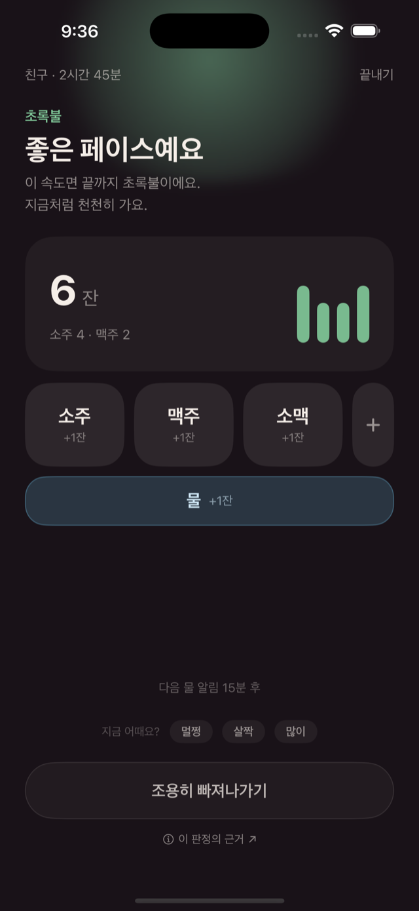
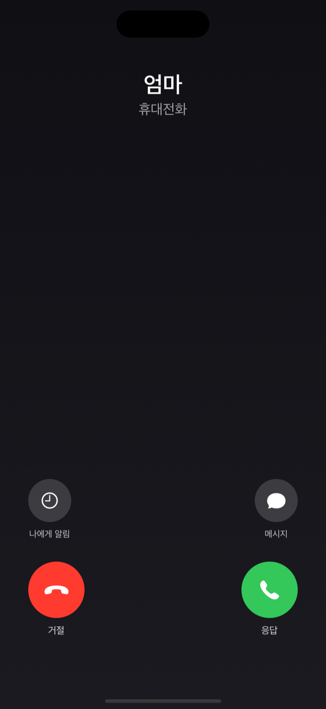
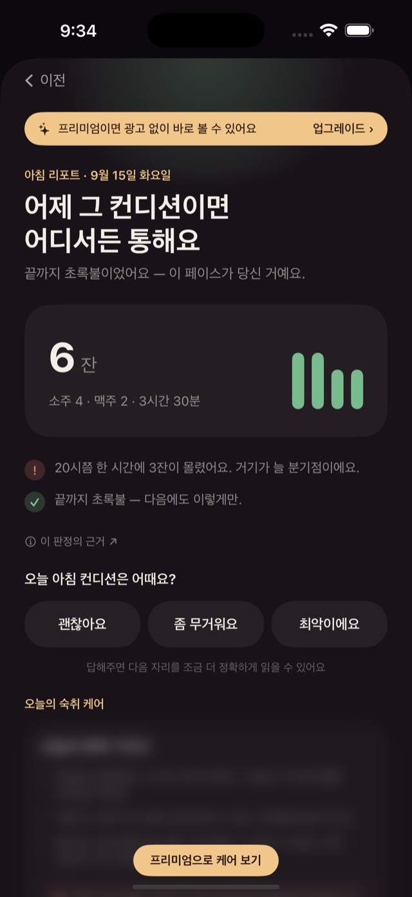
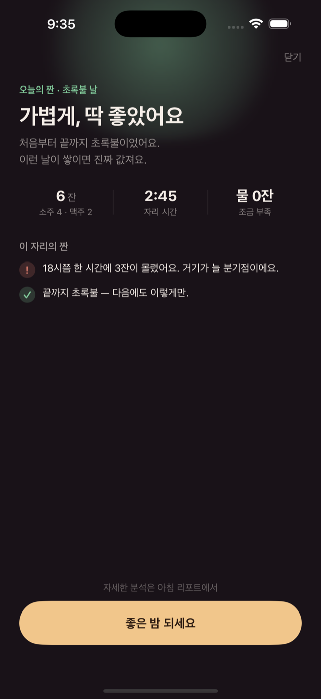
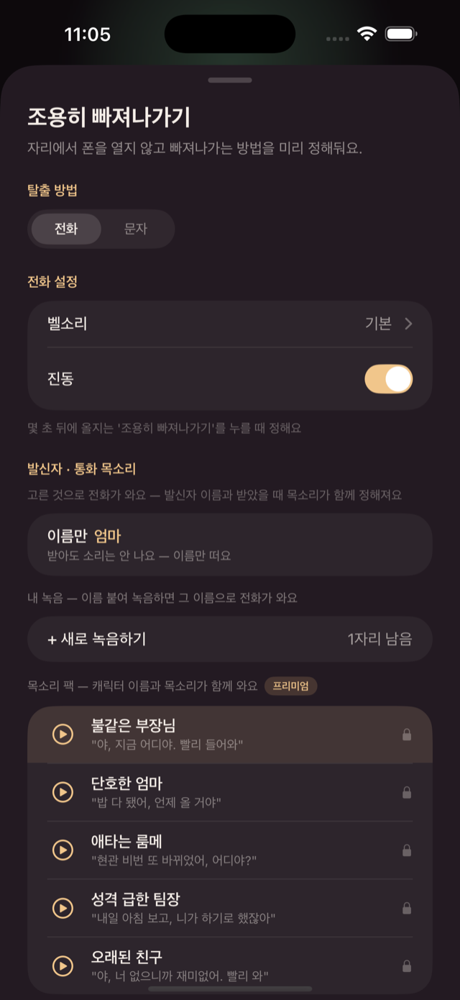

16편의 의학 연구로 설계한 엔진이 내 몸 기준의 취기를 계산하고,
마시는 동안의 페이스부터 다음 날 컨디션까지 챙겨요.
무료 · iPhone · 한국어 포함 5개 언어(영어·일본어·중국어·스페인어)





일어나기 애매한 자리, 버튼 하나 눌러두면 30초 뒤 잠금화면에 전화가 걸려와요. 받으면 미리 고른 목소리가 흘러나오고 — "야, 지금 어디야. 빨리 들어와" — 당신은 미안한 얼굴로 일어나기만 하면 돼요.
발신자 이름·벨소리·타이밍까지 미리 설정하고, 내 목소리를 직접 녹음할 수도 있어요. 전부 폰 안에서만 동작해요 — 실제로 누구에게도 전화하지 않아요.
몇 잔 마셨는지 세주는 앱은 많아요. 짠은 그 기록으로 지금 내가 얼마나 취했는지를 계산해요. 성별·나이·체형·평소 주량·홍조 체질, 소주와 맥주의 흡수 속도 차이까지 반영한 나만의 취기 곡선 — 그리고 답은 숫자가 아니라 초록·노랑·빨강 불빛으로, 조용히요.
페이스가 빨라지면 슬쩍 알려주고, 물 마실 타이밍을 챙기고, 잠금화면에서 잔을 한 번의 탭으로 세요 — 폰을 열 필요도 없어요. 위젯과 라이브 액티비티로 자리 내내 함께해요.
아침 리포트가 판단하지 않는 말투로 어젯밤을 돌려보여줘요 — 몇 시에 잔이 몰렸는지, 끝까지 초록불이었는지. 그리고 오늘 컨디션을 물어봐요. 답할수록 짠은 나를 더 정확히 읽어요. 프리미엄이면 어젯밤 양과 아침 컨디션에 맞춘 맞춤 숙취 케어와 간 회복 타이머까지 — 간이 언제 퇴근하는지 홈에서 보여주고, 기록이 쌓이면 나만의 숙취 경향도 알려줘요.
한국어·영어·일본어·중국어(간체)·스페인어. 앱 전체 UI부터 위젯·잠금화면·인사이트 아티클까지 설정한 언어를 따라가요. 해외 친구에게도 짠을 소개해보세요 — "It's what Koreans say when glasses clink."
짠의 취기 엔진은 의학 논문 16편과 국내외 음주 가이드라인의 수치를 그대로 반영해 설계했어요. 몇 가지만 꼽으면 —
· 체격별 알코올 분포 회귀식 (Seidl, Int J Legal Med 2000 · 529명)
· 체수분량 공식 (Watson, Am J Clin Nutr 1980 · 723명)
· 주종별 흡수 속도 실측 — 같은 양이라도 와인·소주가 맥주보다 빨리 오르는 이유 (Mitchell, ACER 2014)
· 공복·식사에 따른 흡수 보정 (Jones, J Forensic Sci 1991 · 1994)
· 한국인 홍조(ALDH2) 유병률과 그 의미 (JMIR 2024 외)
술 앱은 많지만, 이렇게 계산하는 앱은 없었어요. 그래서 짠의 불빛은 남의 기준이 아니라 내 몸 기준이에요. 자세한 근거는 여기에 다 적어뒀어요.
다만 정직하게 — 취기 추정은 어디까지나 참고용이에요. 짠은 수치나 판정을 내놓지 않고, 운전 가능 여부 판단에는 절대 쓸 수 없어요. 법정 음주 가능 연령 이상만 사용해주세요.
짠은 여러분을 추적하지 않아요. 기록은 오직 내 iCloud에만 저장되고, 개발자는 볼 수 없어요. 프리미엄이 아니면 광고가 가끔 뜨는데(첫 자리는 무료), 맞춤 추적이 아니라 비개인화 광고예요. 프리미엄이면 광고 없이 써요.
오늘 밤부터, 좋은 밤과 가벼운 아침.
App Store에서 무료로 받기